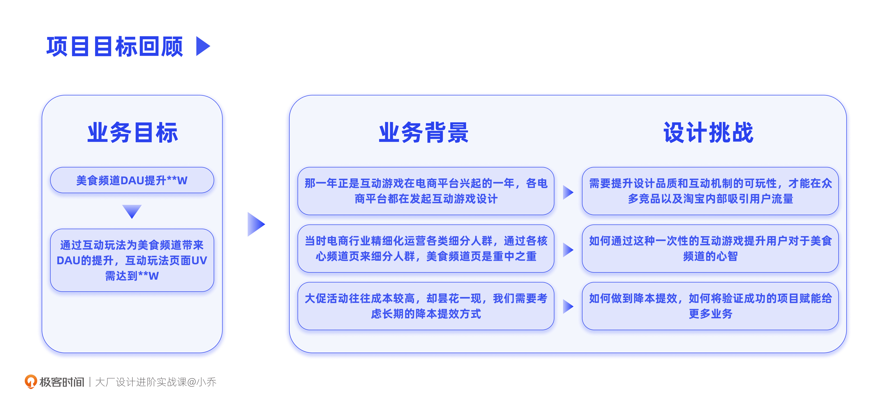
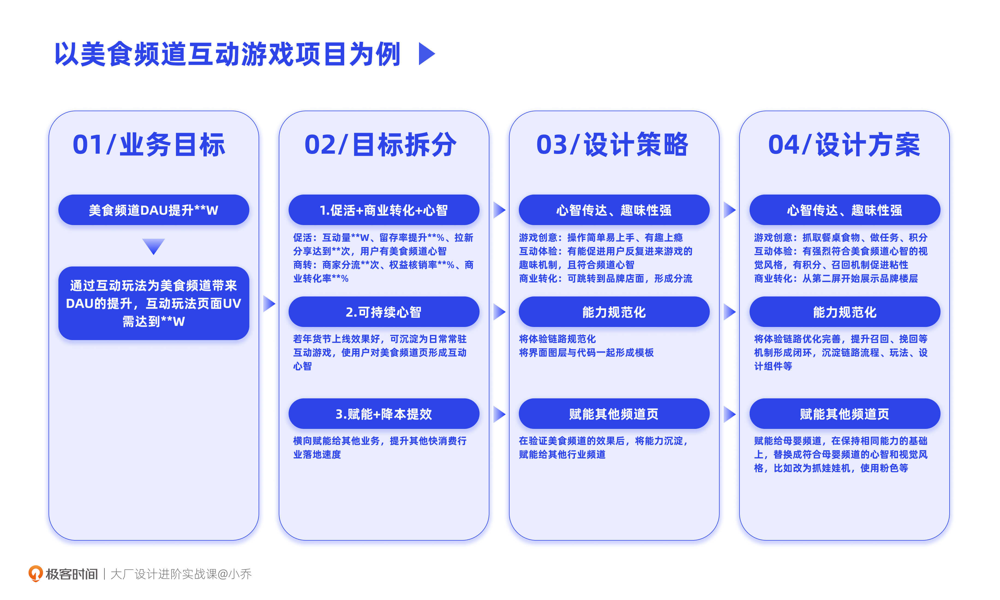
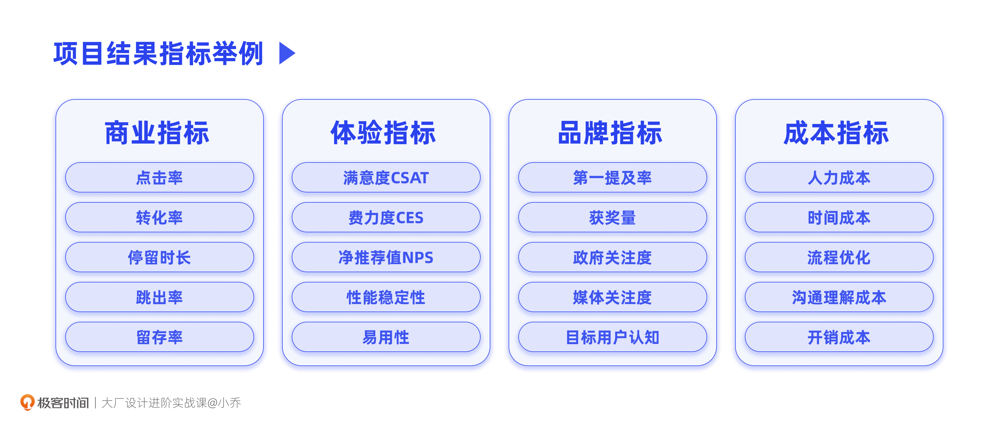
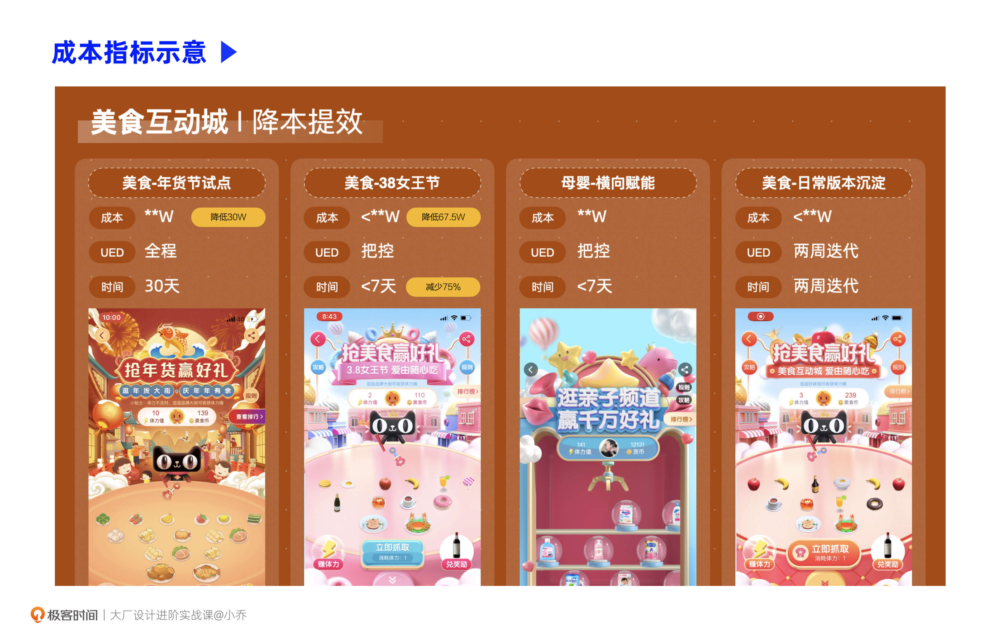

- 00 开篇词 升维思考，是设计师有效成长的第一步.md.html
- 01 业务周期：0-1-10-100-N的发展策略.md.html
- 02 商战模式：如何在商业竞争下突出重围？.md.html
- 03 市场洞察：如何找寻差异化撬动支点？.md.html
- 04 用户洞察：不懂用研的设计师不是好职场人.md.html
- 05 用户画像：是形式主义还是真的有效？.md.html
- 06 用户旅程：挖掘不同用户的核心机会点.md.html
- 07 职场晋升：看懂晋升的“游戏规则”.md.html
- 08 设计价值升级：五层进阶突破成长.md.html
- 09 基础价值 核心三原力：如何将需求转化为设计稿？.md.html
- 10 基础价值 第一性原理：从问题本质解决问题.md.html
- 11 基础价值 设计复盘：只是量化设计结果吗？.md.html
- 12 二级价值 负向网兜：如何全面发现负向问题？.md.html
- 13 二级价值 设计自驱：如何做好项目Owner？.md.html
- 14 二级价值 自驱合作：如何反内卷处理合作关系？.md.html
- 15 三级价值 增长误区：思维惯性陷阱和虚荣数据.md.html
- 16 三级价值 用户增长历程：AARRR是万能的吗？.md.html
- 17 三级价值 产品增长：如何做好产品创新？.md.html
- 18 三级价值 运营增长：如何自驱营销活动和投放？.md.html
- 19 三级价值 品牌增长 抢占心智，赢得人心红利.md.html
- 20 三级价值 增长实操：如何“步步为营”推动落地？.md.html
- 21 四级价值 L型赋能：让T型人才发挥更大价值.md.html
- 22 四级价值 “网状对比”解决共性痛点.md.html
- 23 五级价值 商业画布：设计师可以担任业务方吗？.md.html
- 24 五级价值 共创洞察：如何做好一次完善的workshop？.md.html
- 25 五级价值 领导力觉醒：写给新晋管理者.md.html
- 26 工作选择（上）：2B or 2C设计师？如何规划领域？.md.html
- 27 工作选择（下）：大厂 or 小厂？如何选择赛道？.md.html
- 28 人才地图：认知自我，成为高潜力人才.md.html
- 29 成长历程：如何从设计小白成长为团队负责人？.md.html
- 30 冰山模型：如何成为让面试官欣赏的“面霸”？.md.html
- 31 作品集指导：什么是面试官喜欢的作品集？.md.html
- 用户故事 什么是职场设计师进阶的正确姿势？.md.html
- 结束语 突破自我，成人达己.md.html
- 捐赠
11 基础价值 设计复盘：只是量化设计结果吗？
你好，我是小乔。
通过前面两节课的学习，我们已经可以通过“核心三原力”合理拆分业务需求，落地高质量的设计稿；也可以通过“对勾模型”回归第一性原理，将不合理、不完整的业务需求回退到本质问题去解决，为业务创造更大的价值。
那这样是否已经全面达标基础价值的要求了呢？是否可以向着二级价值迈进，开启设计自驱之路了呢？别着急，我们还差一步才能闭环，就是设计价值的复盘。
不管我们处于哪个级别或能力水平，设计复盘都是非常重要的，是设计师必备的基本职业能力，这也是为什么这节课会放在基础价值中，而不是等大家进阶后再娓娓道来。
为什么设计复盘很重要？
你可能会觉得，我们工作已经很忙了，为什么还要做设计复盘呢？是为了“向上汇报”？还是为了包装项目？
除了这些偏形式主义的目的，我更希望你能理解设计复盘对于个人成长和行业发展的意义。设计复盘对于我们自己来说，是一次重新思考和沉淀个人经验的机会，做一次高质量的复盘，往往比每天投入在承接需求上，有着更深刻的收获和进步；对公司和行业来说，我们沉淀的经验，可以指导其他相似的业务部门更高效地投入项目，得出解决方案，加速推进整个行业的良性发展。
对设计师个人的价值：
年轻的同学在手活技法和业务经验上也许会有一定差异，产出的质量会有好坏之分，但当大家工作到3年左右，设计稿上的差异就会逐渐缩小。如果没有复盘，我们就成为了流水线工人，做完一个需求接下一个，它只是一份劳动，没能让我们事半功倍地成长，也没有将我们的产出做到价值最大化。而通过设计复盘提炼出来的设计推导逻辑链以及多样的解决手法，更能体现设计师的潜力和竞争力。
具体来说的话，一方面，每一次的复盘结果都可以作为下一次项目的指导。
回顾我们完整做一个项目的全过程，将业务目标拆分为设计可以发力的项目，再将设计策略推导为具体的设计方案，最后，通过上线数据不断优化方案。经历完整的过程后，不管项目成功与否，我们都具备了独家经验。
成功项目的经验，会给我们未来以及公司的其他项目带来参考价值；如果失败了也没有关系，总结为什么失败，从而指导下一次的成功。这些失败项目的复盘，往往比成功的经验更有指导作用，避免了幸存者偏差，也帮助我们在做相关业务时避开风险。
另一方面，这也是扩大自己和项目影响力的一个机会。
高价值的个人经验，就会沉淀为团队参考，甚至沉淀为行业标准。比如各大厂总结的适老化指南、电商行业验证的人货场导购方式、2B办公行业推出的提效协同工具等等。设计师除了在项目中给出了很好的答卷，也将经验沉淀下来，给予公司和行业更多的指导，扩大了项目的影响力。具备项目影响力的你，在公司或团队内，往往也会成为明星人才。
对公司、对行业的价值：
在这里，我们可以一起回忆一下自己过往做过的所有项目，是不是每一个都多多少少参考了之前设计师的经验、竞品发展、行业设计趋势、行业方法论、设计规范呢？可以说，没有完全不借助前人或他人的力量独立完成的设计项目。
比如我们接到一个需求，是做产品的首页改版，业务需要覆盖年轻化人群。那我们会去查找之前的版本是出于什么目标在做，为什么现在不能满足，会去查阅行业内覆盖年轻化人群的方法，会去参考竞品是怎么解决问题的。而我们之所以可以找到这些经验，正是因为其他设计师做了沉淀，提炼了核心价值点。给他人以参考，推进更多业务百花齐放，就是设计复盘对于公司以及行业的价值。
如何做好设计复盘？
理解了设计复盘的重要性，我们终于要一起探讨如何做好设计复盘了。
比较可惜的是，很多工作了5年、8年的设计师，依然不会做设计复盘，甚至许多同学只是把设计复盘曲解为项目包装。比如做了一次毛玻璃风格的视觉改版，其实设计过程中并没有真正做过推导，只是为了看起来有推导过程，在事后包装了“简约、轻量、通透”之类的三个关键词，以此来应付主管。但主管其实也不傻，事后的包装往往经不起推敲。
形式主义的设计复盘，确实不如不做，为了应付它，你可能还牺牲了做好项目的时间。而复盘的真正目的，是给我们自己带来成长，给团队创造设计稿以外的设计价值。好的设计复盘，是可以从个人经验升级为群体共识的，同时，它也会不断地被更多设计师共建，成为群体智慧。
因此我们在复盘时，除了展示精美的设计稿，更重要的是讲清楚我们拿到商业与专业结果的来龙去脉，讲清楚优点和问题，使其对未来有指导意义。
做好一次设计项目复盘，主要有以下4个步骤：
- 项目目标回顾
- 关键过程分析
- 多维度量化结果
- 规律和规划总结
我们先从第一步，项目目标回顾开始说起。
第一步：项目目标回顾
业务目标通常已经由上层老板们定好，是几个增长率指标或绝对值指标。比如今年双11大促要比去年GMV增长10%，本地生活业务的市场渗透率要达到70%，短视频平台的DAU要突破5亿等等。
对于我们设计师来说，项目目标回顾的核心，是为了将上层制定的业务目标转化为更具体的业务背景和设计挑战。我们以之前讲过的年货节互动游戏为案例贯穿在每一步中，帮助你更好地理解。
首先，业务目标就是通过互动游戏提升美食频道页的DAU。我们当时面临着3个业务背景：
- 那一年正是互动游戏在电商平台兴起的一年，各电商平台都在发起互动游戏设计；
- 当时电商行业已经度过了打消费升级的阶段，转变为精细化运营各细分人群的策略，通过各核心频道页来细分人群，美食频道页是重中之重；
- 大促活动往往成本较高，却昙花一现，我们需要考虑长期的降本提效方式。
根据业务背景，就会得出相应的对于设计的挑战：
- 需要提升设计品质和互动机制的可玩性，才能在众多竞品以及淘宝内部吸引用户流量；
- 如何通过这种一次性的互动游戏提升用户对于美食频道的心智；
- 如何做到降本提效，如何将验证成功的项目赋能给更多业务。

也是因为有着对业务背景的了解和对设计挑战的预期，才能将业务目标拆分为可以下手的一个个小目标。做项目目标回顾，就是为了让他人明白当时的情况，以及我们做出后续关键策略的原因。
第二步：关键过程分析
当我们讲清楚，为了达到这个业务目标，我们需要面对的业务背景和设计挑战是什么后，就可以进行第二步的关键过程分析了。在这个过程中，我们需要讲清楚每一个小目标是如何进一步转化为设计可以发力的策略，并最终形成具体的设计方案。
这个过程是不是很熟悉？没错，其实就是我们在核心三原力那节课中讲过的“四步拆解法”。复盘其实就是将我们的关键过程重现，将糟粕和精华都沉淀下来，指导下一次行动。

回顾我们之前讲过的年货节互动游戏案例，在目标拆分时，我们根据当时的业务背景和设计挑战拆分出3个小目标，并针对每个小目标制定设计策略，最后推导出具体的设计方案。
在我们复盘时，为了表达更清晰，建议先讲述整体的推导思路，再具体讲解达成每一个小目标的过程。推荐的结构是一个一个事件去分析：目标1-设计策略1-设计方案1；目标2-设计策略2-设计方案2；目标3-设计策略3-设计方案3。也就是说，我们要将目标、策略以及方案之间一一对应，这样可以清晰地讲清楚每一个关键目标的分析过程，使他人可以每次集中在同一个事件中。
以这个项目为例，事件1就是讲清楚如何做出一个让用户感兴趣，愿意互动参与的游戏，从而给品牌商家和商品带来商业转化；事件2是讲清楚如何将这次成功的互动沉淀为日常版本，使用户形成心智，时不时会因为这个互动游戏进入美食频道页；事件3是讲清楚如何做到降本提效，赋能给其他同样重要的频道页，达成公司精细化运营不同频道页的目标。
关键过程的分析，是为了讲明我们是如何一步步推导出最后的设计方案的，不是单纯靠灵感和感性，而是逻辑自洽、经得起推敲的。
第三步：多维度量化结果
讲完了项目目标和背景，针对目标推导的策略，以及具体落地的设计方案后，就到了我们轰轰烈烈收割结果的时刻。
设计结果的复盘，需要同时包含商业价值和专业价值。我们在真实的工作中会发现，很少有优秀的设计项目是仅有商业价值或仅有专业价值的，往往都是两者兼具，相辅相成的。
商业价值高的项目需要更好的体验才能被用户接受，且优秀的体验会进一步提升项目的美誉度，使其商业价值更高；而专业价值高的项目也需要伴随较好的商业价值，否则将很难被用户看见，也很难得到持续优化的资源。
因此，虽然业务目标就是一个数字或者百分比，但我们在回收结果的时候是需要多维度总结的。还记得用户洞察一课中我们讲过衡量项目的4种结果指标吗？这4种指标正是商业价值和专业价值的体现，商业指标和成本指标反应了商业价值，体验指标和品牌指标反应了专业价值。

我们继续以年货节互动项目为例：
- 商业指标是最好统计的，我们提前完成了业务目标，在上线第8天，DAU达到了原本制定的业务指标的3倍。除此以外，也可以根据用户进入美食频道页后的操作链路来判断，如果互动游戏的渗透率高，也足以判断用户对这个功能有粘性，这个游戏对整体频道页有正向作用；
- 体验指标，我并没有去回收体验指标，因为从用户的留存率和分享量来看，已经足以证明用户对游戏体验的满意度，如果你在做项目时有更充足的时间，也可以做一下体验指标的调研；
- 品牌指标，可以调研参与过游戏的用户，看到这个游戏后会想到什么，大部分用户都能回答出是美食频道页，就说明用户认知已经形成；
- 成本指标，我统计了在每次赋能新版本时的支出和降低的价格，收入远远高于这个功能的支出（由于数据保密性，下图的重点数据做了脱敏显示）；并且在人力成本上，也从全程参与转为把控和两周迭代，大大降低了设计师的人力投入；在开发周期上，每个版本的研发也从匆忙追赶进度的30天，转变为每个版本仅需要小于一周的时间。

多维度量化结果，就是我们在向他人晒成绩单。这份成绩单会显示我们的成果有没有达到业务目标、什么方面成绩好以及什么方面成绩不好。
第四步：规律和规划
到第三步为止，我们的项目已经分析完毕。从第四步开始，就要进入高光时刻了。这个部分的核心是总结规律，不管是失败的经验还是成功的经验，都会对我们未来的项目、对公司和行业，起到指导作用。
我们因为做了某个项目，而具备了这个项目的独家经验。除了重点参与了项目的规划、高质量完成了这个项目的设计稿以外，更重要的是总结这个项目带给我们的规律。
什么是规律呢？我们继续以频道页互动游戏的项目举3个例子：
- 商业生态对比：我们通过互动游戏引流给商家，在相同楼层中，哪些商家的点击转化数据好，哪些比较差，这些转化好的品牌呈现什么规律，是老牌的KA商家还是新奇特品牌。这个规律就可以指导公司未来做互动游戏时的商家招募和顺序排布；
- 多版本横向对比：我们通过一次成功的年货节项目，赋能了其他10多种不同的版本，比如美食频道页的日常版本、38女王节的版本、61儿童节的版本等等，对比这些不同版本在上线同样时长的数据差异，可以发现不同版本之间数据高低走势的规律。这个规律就能指导公司在不同大促时期采用更好的策略；
- AB测试对比：在项目中的AB测试实验中找寻数据规律，比如我们设计的游戏机制是限制在10次抓取机会，还是限制在3次抓取机会，用户的参与度、粘性和商业转化会更好。这些规律都会指导公司其他的互动游戏项目。
如果你更加有心的话，甚至每个时间的每个更新动作都可以记录下来，也许是换了批商家、换了个入口渠道、改了个入口样式、更新了游戏机制等等，这些都可以在数据反馈中找到规律。我们要明白的是，规律并不只是停留在设计表层的。
了解了这些规律后，就和掌握了商业和用户洞察同理，可以指导我们更好地拆分出设计解法。你看，我们在最初做项目目标回顾时，梳理的业务背景和设计挑战，不正式因为我们了解整体的发展大局吗？
当我们总结出方方面面的规律后，就可以顺应着这些规律给出未来规划或建议了，逻辑扎实，水到渠成。
到此为止，我们就完成了一次完整的项目复盘。当然，我还是要强调一下，总结出来的规律是用来参考的经验，不能直接复用，因为每个项目、每个时间阶段、每个公司的业务、每个团队的能力都存在差异，需要理性判断参考和复用的程度。
即便是同一个类型的项目，每一年的策略甚至都会不同。以大家耳熟能详的天猫双11为例，2015年的核心策略是做个性化、App化，从H5变为手淘中的内嵌App。因为效果较好，验证了可行性，2016年的策略就是稳定延续，但即便如此，也同样做了许多细节优化和调整。但在2017年，整体的行业方向发生了变化，需要面向多元的用户类型做消费升级，此时就不能再一味地沿用2015年的策略了。为了满足丰富的用户类型和场景，团队调整了设计策略，做了动态化、场景化设计，使得不同类型的用户打开的页面不同，让人、货、场更加匹配。
今日小结
今天，我们一起学习了基础价值的最后一课，做好设计复盘。经过今天的探讨，相信你已经明白设计复盘不是形式主义，更不是为了敷衍主管，而是为我们自己、为公司甚至行业，带来更大的设计价值。
设计价值除了我们输出的设计稿以外，背后的逻辑链梳理、业务实打实的商业增长、这个项目带给我们的规律总结，是要比仅仅停留在表象的设计稿带来更高价值的。
不管我们处于哪个级别或能力水平，设计复盘都是设计师必备的基本职业能力。它确实可以用来“向上汇报”，因为价值足够高，但有价值的部分并不是因为包装，而是真正做出了成绩，产出了经验。
为了做好设计复盘，我总结了四个关键步骤。第一步，项目目标回顾，主要描述此时此刻面临的业务背景环境和设计需要解决的困难；第二步，关键过程分析，就是我们在做项目时使用的“四步拆解法”，只是描述时按一个一个事件去讲；第三步，多维度量化结果，就是统计我们通过这个项目带来的数据、成本、品牌、体验方面的成果；第四步，规律和规划总结，是整个复盘的高光时刻，为什么高光时刻不是优秀的项目结果呢？因为规律和经验才是影响未来、影响更多设计师、影响行业的重要资料。
互动时刻
回顾你过往的工作，是否曾经遇到过形式主义的设计复盘？你是如何复盘设计项目的，是否有更好的方法呢？
欢迎在留言区分享你的经验，与我和其他同学一起讨论，让我们在互相交流的过程中，向彼此学习更多的行业知识。我们建了一个读者交流群，欢迎你的加入，和其他同学一起成长！如果觉得有收获，也欢迎把文章分享给你的朋友。我们下节课见。
© 2019 - 2023 Liangliang Lee. Powered by gin and hexo-theme-book.